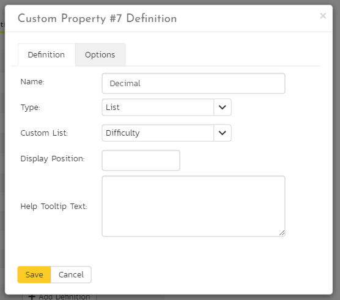
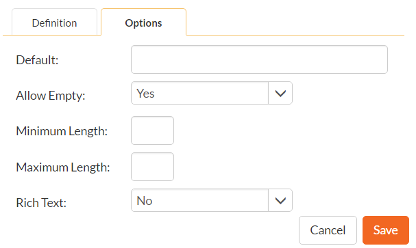

Template: Custom Properties
SpiraPlan allows you to customize all of the artifacts in the system (requirements, test cases, incidents, etc.) by adding user-defined custom properties in addition to the built-in fields. You can create a variety of different types of custom properties. This section describes how to setup different custom lists and custom properties in your templates.
Artifacts in SpiraPlan can have up to 30 different custom properties per artifact-type, per template. There are different types of custom properties allowed:
-
Text: Normal or Rich-Text field.
-
Integer: Whole-Number entry.
-
Decimal: Fractional number entry (currency, etc.)
-
Boolean: Simple yes/no (on/off) checkbox.
-
Date: Date selector.
-
List: Custom List selector.
-
Multi-List: Custom List selector that allows multiple values.
-
User: List of assignable users.
Each custom property can have optional settings applied to it. Optional settings are as follows. (Note that not all settings are allowed for all property types.)
-
Default: The default value when a new artifact is created.
-
Allow Empty: Whether or not an empty value is allowed.
-
Precision: (Decimal Only) How many decimal places is allowed (or the value is rounded to).
-
Minimum Value: The minimum value allowed.
-
Maximum Value: The maximum value allowed.
-
Minimum Length: The minimum length of the data required in the field.
-
Maximum Length: The maximum length of the data allowed in the field.
-
Rich Text: Whether or not the text field allows HTML or not.
-
Custom List: The defined Custom List for the field that users can select from.
Important: Note that setting 'Allow Empty' to No will override any workflow step definitions, and will always require a value to be entered in, even if the workflow is configured to have the field disabled!
Edit Custom Lists
If you are planning on having any list based custom properties in your template, then you first need to create and populate the custom template lists that the user will be able to select from. These lists are stored separately from the individual artifact types so that you can have one set of values (e.g. list of operating systems under test) be reused by multiple artifact types.
The following screen is displayed when you choose the "Custom Lists" link from the Administration menu:
The screen displays all the custom lists currently defined within the template, together the number of values associated with each list. By default the screen will initially be empty so the first thing you need to do is click "Add List" to create a new custom list:

After changing the name of the list, and specifying whether the values will be ordered by their name or the order in which they were entered (called by ID), you can either click "Save" to commit the change, or click the "Add Value" option to add some list values:

This is the set of values that the user will select from the drop-down list when the custom property is displayed. You can change the display to include:
-
All Active -- displays only custom list values that are active
-
All But Deleted -- displays all custom list values that are active or inactive but have not been deleted
-
All -- displays all custom list values, including those that have been deleted
To add a new custom list value, click the "Add Value" button and a new row will be added to the list which you can now edit. To edit an existing custom list value, change the name in the textbox and click "Save". To delete a custom list value, click on the "Delete" hyperlink. If you want to remove an item from the list temporarily, you can set its Active dropdown list to 'No', if you want to remove an item permanently, just click the 'Delete' button.
Note: Even if you delete a custom list value, there is an option to undelete by simply changing the display selection to "All" and clicking the 'Undelete' hyperlink next to a deleted value.
To edit an existing custom list, you just need to click on the "Edit Values" button to display the custom list name and list of associated values (which is the same screen as the one displayed for a new list). To remove a custom list from the template, just click on the "Remove" button next to the custom list and the list and all its associated values will be deleted from the template.
Edit Custom Properties
This option is used to actually define the custom properties associated with each artifact type in the template. The following screen is displayed when you choose the "Custom Properties" link from the Administration menu:

The screen displays a list of all the possible custom properties for a particular artifact type for the current template. Each artifact type (requirement, test case, etc.) can have up to thirty (30) custom properties of various types.
Initially the screen will default to showing the existing custom properties for a template's Requirements; to change the list to a different artifact type (e.g. Incidents), all you need to do is change the artifact type in the drop-down-list. This will refresh the list to show the custom properties for that artifact type.
To edit an existing custom property definition or add a new definition, click the "Edit Definition" button for a specific property, and the following dialog will be displayed:

The fields visible will vary depending on the type of custom property you have selected, but every custom property will need to have a Name and a Type. The Name is the caption that will be shown to the user when viewing or editing the artifact. The type is the type of data the field allows. If the custom property is either a List or Multi-List type, you will need to choose the associated Custom List that you previously defined.
Under the Options tab will be available options that can be set for the custom property:

When finished, click the 'Save' button and you will be returned to the Custom Property list.
Important: When changing a custom property's type or removing a custom property, the data is not actually removed from the artifact. Therefore, if you change a custom property from a date type to a text custom property, the field will display the old date value until it is changed by the user.